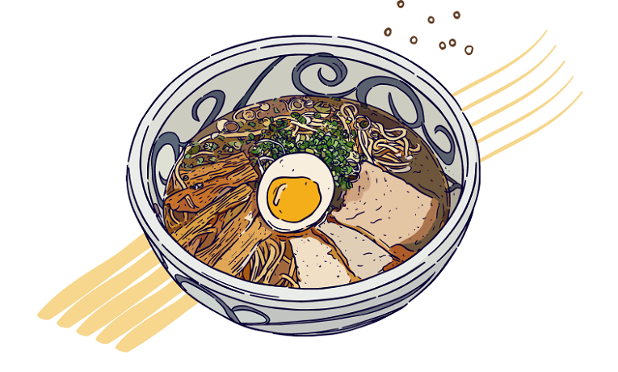

A Bowl of Love From Japanese Cusine
Ramen (ラーメン) is a noodle soup dish that was originally imported from China and has become one of the most popular dishes in Japan in recent decades.
order now

Tomato Ramen
Hard boiled, soft boiled, raw and marinated eggs...
Tori Ramen
Made of chicken and a white and creamy soup...

Tonkotsu Ramen
Made of pork bones which have been boiled down...